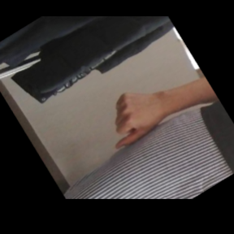

Fine-Tuning Image Classifiers with PyTorch and the timm library for Beginners
- Introduction
- Getting Started with the Code
- Setting Up Your Python Environment
- Importing the Required Dependencies
- Setting Up the Project
- Loading and Exploring the Dataset
- Selecting a Model
- Preparing the Data
- Fine-tuning the Model
- Making Predictions with the Model
- Exploring the In-Browser Demo
- Conclusion
Introduction
Welcome to this hands-on guide to fine-tuning image classifiers with PyTorch and the timm library. Fine-tuning refers to taking a pre-trained model and adjusting its parameters using a new dataset to enhance its performance on a specific task. We can leverage pre-trained models to achieve high performance even when working with limited data and computational resources. The timm library further aids our goal with its wide range of pre-trained models, catering to diverse needs and use cases.
In this tutorial, we develop a hand gesture recognizer. Hand gesture recognition has many real-world applications, ranging from human-computer interaction and sign-language translation to creating immersive gaming experiences. By the end of this tutorial, you will have a practical hand gesture recognizer and a solid foundation to apply to other image classification tasks. You’ll also be able to interact with a model trained with this tutorial’s code through an in-browser demo that runs locally on your computer. Check out the video below for a quick preview.
This guide is structured so that you don’t need a deep understanding of deep learning to complete it. If you follow the instructions, you can make it through. Yet, if you are eager to delve deeper into machine learning and deep learning, I recommend fast.ai’s Practical Deep Learning for Coders course. The course employs a hands-on approach that starts you off training models from the get-go and gradually digs deeper into the foundational concepts.
Let’s dive in and start training our hand gesture classifier!
Getting Started with the Code
The tutorial code is available as a Jupyter Notebook, which you can run locally or in a cloud-based environment like Google Colab. If you’re new to these platforms or need some guidance setting up, I’ve created dedicated tutorials to help you:
- Getting Started with Google Colab: This tutorial introduces you to Google Colab, a free, cloud-based Jupyter Notebook service. You’ll learn to write, run, and share Python code directly in your browser.
- Setting Up a Local Python Environment with Mamba for Machine Learning Projects on Windows: This tutorial guides you through installing the Mamba package manager on Windows, setting up a local Python environment, and installing PyTorch and Jupyter for machine learning projects.
No matter your choice of environment, you’ll be well-prepared to follow along with the rest of this tutorial. You can download the notebook from the tutorial’s GitHub repository or open the notebook directly in Google Colab using the links below.
| Platform | Jupyter Notebook | Utility File |
|---|---|---|
| Google Colab | Open In Colab | |
| Linux | GitHub Repository | |
| Linux (Intel Arc) | GitHub Repository | |
| Windows | GitHub Repository | windows_utils_hf.py |
| Windows (Intel Arc) | GitHub Repository | windows_utils_hf.py |
The code in this tutorial targets Linux platforms, but most of it should also work on macOS and Windows.
However, Python multiprocessing works differently on those platforms, requiring some changes to leverage multi-processing for the DataLoader objects.
I’ve made a dedicated version of the tutorial code to run on Windows. The included changes should also work on macOS, but I don’t have a Mac to verify.
Setting Up Your Python Environment
Before diving into the code, we’ll create a Python environment and install the necessary libraries. Creating a dedicated environment will ensure our project has all its dependencies in one place and does not interfere with other Python projects you may have.
Please note that this section is for readers setting up a local Python environment on their machines. If you’re following this tutorial on a cloud-based platform like Google Colab, the platform already provides an isolated environment with many Python libraries pre-installed. In that case, you may skip this section and directly proceed to the code sections. However, you may still need to install certain libraries specific to this tutorial using similar pip install commands within your notebook. The dedicated Colab Notebook contains the instructions for running it in Google Colab.
Creating a Python Environment
First, we’ll create a Python environment using Conda. Conda is a package manager that can create isolated Python environments. These environments are like sandboxed spaces where you can install Python libraries without affecting the rest of your system.
To create a new Python environment, open a terminal with Conda/Mamba installed and run the following commands:
# Create a new Python 3.11 environment
conda create --name pytorch-env python=3.11 -y
# Activate the environment
conda activate pytorch-env# Create a new Python 3.11 environment
mamba create --name pytorch-env python=3.11 -y
# Activate the environment
mamba activate pytorch-envThe first command creates a new Python environment named pytorch-env using Python 3.11. The -y flag confirms that we want to proceed with the installation. After building the environment, the second command activates it, setting it as the active Python environment.
Installing PyTorch
PyTorch is a popular open-source machine learning framework that enables users to perform tensor computations, build dynamic computational graphs, and implement custom machine learning architectures. To install PyTorch with CUDA support (which allows PyTorch to leverage NVIDIA GPUs for faster training), we’ll use the following command:
# Install PyTorch with CUDA
pip install torch torchvision torchaudio --index-url https://download.pytorch.org/whl/cu121# MPS (Metal Performance Shaders) acceleration is available on MacOS 12.3+
pip install torch torchvision torchaudio# Install PyTorch with CUDA
pip install torch torchvision torchaudio --index-url https://download.pytorch.org/whl/cu121Installation instructions for specific hardware and operating systems are available in the “Get Started” section of the PyTorch website.
Installing Additional Libraries
We also need to install some additional libraries for our project. If you’re new to Python or haven’t used some of these packages before, don’t worry.
jupyter: An open-source web application that allows you to create and share documents that contain live code, equations, visualizations, and narrative text.matplotlib: This package provides a comprehensive collection of visualization tools to create high-quality plots, charts, and graphs for data exploration and presentation.pandas: This package provides fast, powerful, and flexible data analysis and manipulation tools.pillow: The Python Imaging Library adds image processing capabilities.timm: The timm library provides state-of-the-art (SOTA) computer vision models, layers, utilities, optimizers, schedulers, data loaders, augmentations, and training/evaluation scripts.torcheval: A library with simple and straightforward tooling for model evaluations.torchtnt: A library for PyTorch training tools and utilities.tqdm: A Python library that provides fast, extensible progress bars for loops and other iterable objects in Python.
To install these additional libraries, we’ll use the following command:
# Install additional dependencies
pip install jupyter matplotlib pandas pillow timm torcheval torchtnt==0.2.0 tqdmInstalling Utility Packages
Finally, we will install some utility packages I made to help us handle images (cjm_pil_utils), interact with PyTorch (cjm_pytorch_utils), work with pandas DataFrames (cjm_pandas_utils), and apply image transforms (cjm_torchvision_tfms):
# Install utility packages
pip install cjm_pandas_utils cjm_psl_utils cjm_pil_utils cjm_pytorch_utils cjm_torchvision_tfmsNow, our environment is all setup and ready to go! Remember, these libraries are just tools. If you don’t fully understand them yet, don’t worry. As we go through the tutorial, we’ll learn more about these tools and see them in action.
Launching Jupyter Notebook
Now that our environment is ready, it’s time to launch Jupyter Notebook. Jupyter Notebooks provide an interactive coding environment where we’ll work for the rest of this tutorial. To launch Jupyter Notebook, navigate to the location where you have stored the tutorial notebook (if you downloaded it) from a terminal with the pytorch-env environment active, and type the following command:
jupyter notebookThis command will open a new tab in your default web browser, showing the Jupyter file browser. From the Jupyter file browser, you can open the tutorial notebook or create a new one to start the next section.
If you close your terminal, the Jupyter Notebook server will stop. So, keep your terminal running while you’re working on the tutorial.
Importing the Required Dependencies
With our environment set up, it’s time to start the coding part of this tutorial. First, we will import the necessary Python packages into our Jupyter Notebook. Here’s a brief overview of how we’ll use these packages:
- matplotlib: We use the matplotlib package to explore the dataset samples and class distribution.
- NumPy: We’ll use it to store PIL Images as arrays of pixel values.
- pandas: We use Pandas
DataFrameandSeriesobjects to format data as tables. - PIL (Pillow): We’ll use it for opening and working with image files.
- Python Standard Library dependencies: These are built-in modules that come with Python. We’ll use them for various tasks like handling file paths (
pathlib.Path), manipulating JSON files (json), random number generation (random), multiprocessing (multiprocessing), mathematical operations (math), copying Python objects (copy), file matching patterns (glob), working with dates and times (datetime), and interacting with the operating system (os). - PyTorch dependencies: We’ll use PyTorch’s various modules for building our model, processing data, and training.
- timm library: We’ll use the timm library to download and prepare a pre-trained model for fine-tuning.
- tqdm: We use the library to track the progress of longer processes like training.
- Utility functions: These are helper functions from the packages we installed earlier. They provide shortcuts for routine tasks and keep our code clean and readable.
Importing the Required Dependencies
# Import Python Standard Library dependencies
from copy import copy
import datetime
from glob import glob
import json
import math
import multiprocessing
import os
from pathlib import Path
import random
import urllib.request
# Import utility functions
from cjm_pandas_utils.core import markdown_to_pandas
from cjm_pil_utils.core import resize_img, get_img_files
from cjm_psl_utils.core import download_file, file_extract
from cjm_pytorch_utils.core import set_seed, pil_to_tensor, tensor_to_pil, get_torch_device, denorm_img_tensor
from cjm_torchvision_tfms.core import ResizeMax, PadSquare
# Import matplotlib for creating plots
import matplotlib.pyplot as plt
# Import numpy
import numpy as np
# Import pandas module for data manipulation
import pandas as pd
# Do not truncate the contents of cells and display all rows and columns
pd.set_option('max_colwidth', None, 'display.max_rows', None, 'display.max_columns', None)
# Import PIL for image manipulation
from PIL import Image
# Import timm library
import timm
# Import PyTorch dependencies
import torch
import torch.nn as nn
from torch.amp import autocast
from torch.cuda.amp import GradScaler
from torch.utils.data import Dataset, DataLoader
import torchvision
torchvision.disable_beta_transforms_warning()
import torchvision.transforms.v2 as transforms
from torchvision.transforms.v2 import functional as TF
from torchtnt.utils import get_module_summary
from torcheval.metrics import MulticlassAccuracy
# Import tqdm for progress bar
from tqdm.auto import tqdmHaving successfully imported the dependencies, we are ready to move to the next step.
Setting Up the Project
In this section, we set up some basics for our project. First, we set a seed for generating random numbers using the set_seed function from the cjm_pytorch_utils package.
Setting a Random Number Seed
A fixed seed value is helpful when training deep-learning models for reproducibility, debugging, and comparison. Having reproducible results allows others to confirm your findings. Using a fixed seed can make it easier to find bugs as it ensures the same inputs produce the same outputs. Likewise, using fixed seed values lets you compare performance between models and training parameters. That said, it’s often a good idea to test different seed values to see how your model’s performance varies between them. Also, don’t use a fixed seed value when you deploy the final model.
# Set the seed for generating random numbers in PyTorch, NumPy, and Python's random module.
seed = 1234
set_seed(seed)Setting the Device and Data Type
Next, we determine the device to run our computations on and the data type of our tensors using the get_torch_device function from the cjm_pytorch_utils package.
PyTorch can run on either a CPU or a GPU. The get_torch_device function will automatically check if a supported Nvidia or Mac GPU is available. Otherwise, it will use the CPU. We’ll use the device and type variables to ensure all tensors and model weights are on the correct device and have the same data type. Otherwise, we might get errors.
device = get_torch_device()
dtype = torch.float32
device, dtype('cuda', torch.float32)Setting the Directory Paths
We’ll then set up a directory for our project to store our results and other related files. The code currently creates the folder in the current directory (./). Update the path if that is not suitable for you.
We also need a place to store our datasets. We’re going to create a directory for this purpose. If running locally, select a suitable folder location to store the dataset. For a cloud service like Google Colab, you can set it to the current directory.
# The name for the project
project_name = f"pytorch-timm-image-classifier"
# The path for the project folder
project_dir = Path(f"./{project_name}/")
# Create the project directory if it does not already exist
project_dir.mkdir(parents=True, exist_ok=True)
# Define path to store datasets
dataset_dir = Path("/mnt/980_1TB_2/Datasets/")
# Create the dataset directory if it does not exist
dataset_dir.mkdir(parents=True, exist_ok=True)
# Define path to store archive files
archive_dir = dataset_dir/'../Archive'
# Create the archive directory if it does not exist
archive_dir.mkdir(parents=True, exist_ok=True)
# Creating a Series with the paths and converting it to a DataFrame for display
pd.Series({
"Project Directory:": project_dir,
"Dataset Directory:": dataset_dir,
"Archive Directory:": archive_dir
}).to_frame().style.hide(axis='columns')| Project Directory: | pytorch-timm-image-classifier |
|---|---|
| Dataset Directory: | /mnt/980_1TB_2/Datasets |
| Archive Directory: | /mnt/980_1TB_2/Datasets/../Archive |
Double-check the project and dataset directories exist in the specified paths and that you can add files to them before continuing.
At this point, our environment is set up and ready to go. We’ve set our random seed, determined our computation device, and set up directories for our project and dataset. In the next section, we will download and explore the dataset.
Loading and Exploring the Dataset
Now that we set up our project, we can start working with our dataset. The dataset we’ll use is a downscaled subset of HaGRID (HAnd Gesture Recognition Image Dataset) that I modified for image classification tasks. The dataset contains images for 18 distinct hand gestures and an additional no_gesture class for idle hands. The dataset is approximately 3.8 GB, but you will need about 7.6 GB to store the archive file and extracted dataset.
- HuggingFace Hub Dataset Repository: cj-mills/hagrid-classification-512p-no-gesture-150k-zip
The following steps demonstrate how to load the dataset from the HuggingFace Hub, inspect the dataset, and visualize some sample images.
Setting the Dataset Path
We first need to construct the name for the chosen Hugging Face Hub dataset and define where to download and extract the dataset.
# Set the name of the dataset
dataset_name = 'hagrid-classification-512p-no-gesture-150k-zip'
# Construct the HuggingFace Hub dataset name by combining the username and dataset name
hf_dataset = f'cj-mills/{dataset_name}'
# Create the path to the zip file that contains the dataset
archive_path = Path(f'{archive_dir}/{dataset_name.removesuffix("-zip")}.zip')
# Create the path to the directory where the dataset will be extracted
dataset_path = Path(f'{dataset_dir}/{dataset_name.removesuffix("-zip")}')
# Creating a Series with the dataset name and paths and converting it to a DataFrame for display
pd.Series({
"HuggingFace Dataset:": hf_dataset,
"Archive Path:": archive_path,
"Dataset Path:": dataset_path
}).to_frame().style.hide(axis='columns')| HuggingFace Dataset: | cj-mills/hagrid-classification-512p-no-gesture-150k-zip |
|---|---|
| Archive Path: | /mnt/980_1TB_2/Datasets/../Archive/hagrid-classification-512p-no-gesture-150k.zip |
| Dataset Path: | /mnt/980_1TB_2/Datasets/hagrid-classification-512p-no-gesture-150k |
Downloading the Dataset
We can now download the archive file and extract the dataset using the download_file and file_extract functions from the cjm_psl_utils package. We can delete the archive afterward to save space.
# Construct the HuggingFace Hub dataset URL
dataset_url = f"https://huggingface.co/datasets/{hf_dataset}/resolve/main/{dataset_name.removesuffix('-zip')}.zip"
print(f"HuggingFace Dataset URL: {dataset_url}")
# Set whether to delete the archive file after extracting the dataset
delete_archive = True
# Download the dataset if not present
if dataset_path.is_dir():
print("Dataset folder already exists")
else:
print("Downloading dataset...")
download_file(dataset_url, archive_dir)
print("Extracting dataset...")
file_extract(fname=archive_path, dest=dataset_dir)
# Delete the archive if specified
if delete_archive: archive_path.unlink()Get Image Folders
The dataset organizes samples for each gesture class into separate sub-folders.
img_folder_paths = [folder for folder in dataset_path.iterdir() if folder.is_dir()]
# Display the names of the folders using a Pandas DataFrame
pd.DataFrame({"Image Folder": [folder.name for folder in img_folder_paths]})| Image Folder | |
|---|---|
| 0 | call |
| 1 | dislike |
| 2 | fist |
| 3 | four |
| 4 | like |
| 5 | mute |
| 6 | no_gesture |
| 7 | ok |
| 8 | one |
| 9 | palm |
| 10 | peace |
| 11 | peace_inverted |
| 12 | rock |
| 13 | stop |
| 14 | stop_inverted |
| 15 | three |
| 16 | three2 |
| 17 | two_up |
| 18 | two_up_inverted |
Get Image File Paths
Now that we have the image image folder paths, we can get the file paths for all the images in the dataset.
# Get a list of all image file paths from the image folders
class_file_paths = [get_img_files(folder) for folder in img_folder_paths]
# Get all image files in the 'img_dir' directory
img_paths = [
file
for folder in class_file_paths # Iterate through each image folder
for file in folder # Get a list of image files in each image folder
]
# Print the number of image files
print(f"Number of Images: {len(img_paths)}")
# Display the first five entries using a Pandas DataFrame
pd.DataFrame(img_paths).head()Number of Images: 153735| 0 | |
|---|---|
| 0 | /mnt/980_1TB_2/Datasets/hagrid-classification-512p-no-gesture-150k/call/3ffbf0a0-1837-42cd-8f13-33977a2b47aa.jpeg |
| 1 | /mnt/980_1TB_2/Datasets/hagrid-classification-512p-no-gesture-150k/call/7f4d415e-f570-42c3-aa5a-7c907d2d461e.jpeg |
| 2 | /mnt/980_1TB_2/Datasets/hagrid-classification-512p-no-gesture-150k/call/0003d6d1-3489-4f57-ab7a-44744dba93fd.jpeg |
| 3 | /mnt/980_1TB_2/Datasets/hagrid-classification-512p-no-gesture-150k/call/00084dfa-60a2-4c8e-9bd9-25658382b8b7.jpeg |
| 4 | /mnt/980_1TB_2/Datasets/hagrid-classification-512p-no-gesture-150k/call/0010543c-be59-49e7-8f6d-fbea8f5fdc6b.jpeg |
Inspecting the Class Distribution
Next, we get the names of all the classes in our dataset and inspect the distribution of images among these classes. A balanced dataset (where each class has approximately the same number of instances) is ideal for training a machine-learning model.
Get image classes
# Get the number of samples for each image class
class_counts_dict = {folder[0].parent.name:len(folder) for folder in class_file_paths}
# Get a list of unique labels
class_names = list(class_counts_dict.keys())
# Display the labels and the corresponding number of samples using a Pandas DataFrame
class_counts = pd.DataFrame.from_dict({'Count':class_counts_dict})
class_counts| Count | |
|---|---|
| call | 6939 |
| dislike | 7028 |
| fist | 6882 |
| four | 7183 |
| like | 6823 |
| mute | 7139 |
| no_gesture | 27823 |
| ok | 6924 |
| one | 7062 |
| palm | 7050 |
| peace | 6965 |
| peace_inverted | 6876 |
| rock | 6883 |
| stop | 6893 |
| stop_inverted | 7142 |
| three | 6940 |
| three2 | 6870 |
| two_up | 7346 |
| two_up_inverted | 6967 |
Visualize the class distribution
# Plot the distribution
class_counts.plot(kind='bar')
plt.title('Class distribution')
plt.ylabel('Count')
plt.xlabel('Classes')
plt.xticks(range(len(class_counts.index)), class_names) # Set the x-axis tick labels
plt.xticks(rotation=75) # Rotate x-axis labels
plt.gca().legend().set_visible(False)
plt.show()
Each class, excluding the no_gesture class, has roughly the same number of samples. The no_gesture class contains approximately four times as many images because of the immense variety of non-matching hand positions.
Visualizing Sample Images
Lastly, we will visualize the first sample image of each class in our dataset. Visualizing the samples helps us get a feel for the kind of images we’re working with and whether they’re suitable for the task at hand.
# Create a list to store the first image found for each class
sample_image_paths = [folder[0] for folder in class_file_paths]
sample_labels = [path.parent.stem for path in sample_image_paths]
# Calculate the number of rows and columns
grid_size = math.floor(math.sqrt(len(sample_image_paths)))
n_rows = grid_size+(1 if grid_size**2 < len(sample_image_paths) else 0)
n_cols = grid_size
# Create a figure for the grid
fig, axs = plt.subplots(n_rows, n_cols, figsize=(12,12))
for i, ax in enumerate(axs.flatten()):
# If we have an image for this subplot
if i < len(sample_image_paths) and sample_image_paths[i]:
# Add the image to the subplot
ax.imshow(np.array(Image.open(sample_image_paths[i])))
# Set the title to the corresponding class name
ax.set_title(sample_labels[i])
# Remove the axis
ax.axis('off')
else:
# If no image, hide the subplot
ax.axis('off')
# Display the grid
plt.tight_layout()
plt.show()
We have loaded the dataset, inspected its class distribution, and visualized some sample images. In the next section, we will select and load our model.
Selecting a Model
Choosing a suitable model for your task is crucial for the success of your machine learning project. The model you select will depend on several factors, including the size and nature of your dataset, the problem you’re trying to solve, and the computational resources you have at your disposal.
Exploring Available Models
You can explore the pretrained models available in the timm library using the timm.list_models() method. The library has hundreds of models, so we’ll narrow our search to the ResNet18 family of models. ResNet 18 models are popular for image classification tasks due to their balance of accuracy and speed.
pd.DataFrame(timm.list_models('resnet18*', pretrained=True))| 0 | |
|---|---|
| 0 | resnet18.a1_in1k |
| 1 | resnet18.a2_in1k |
| 2 | resnet18.a3_in1k |
| 3 | resnet18.fb_ssl_yfcc100m_ft_in1k |
| 4 | resnet18.fb_swsl_ig1b_ft_in1k |
| 5 | resnet18.gluon_in1k |
| 6 | resnet18.tv_in1k |
| 7 | resnet18d.ra2_in1k |
Choosing the ResNet18-D Model
For this tutorial, I went with the pretrained ResNet 18-D model. This model’s balance of accuracy and speed makes it suitable for real-time applications, such as hand gesture recognition. While this model is a good all-rounder, others may work better for specific applications. For example, some models are designed to run on mobile devices and may sacrifice some accuracy for improved performance. Whatever your requirements are, the timm library likely has a suitable model for your needs. Feel free to try different models and see how they compare.
Inspecting the Model Configuration
Next, we will inspect the configuration of our chosen model. The model config gives us information about the pretraining process for the model.
# Import the resnet module
from timm.models import resnet as model_family
# Define the base model variant to use
base_model = 'resnet18d'
version = "ra2_in1k"
# Get the default configuration of the chosen model
model_cfg = model_family.default_cfgs[base_model].default.to_dict()
# Show the default configuration values
pd.DataFrame.from_dict(model_cfg, orient='index')| 0 | |
|---|---|
| url | https://github.com/rwightman/pytorch-image-models/releases/download/v0.1-weights/resnet18d_ra2-48a79e06.pth |
| hf_hub_id | timm/ |
| custom_load | False |
| input_size | (3, 224, 224) |
| test_input_size | (3, 288, 288) |
| fixed_input_size | False |
| interpolation | bicubic |
| crop_pct | 0.875 |
| test_crop_pct | 0.95 |
| crop_mode | center |
| mean | (0.485, 0.456, 0.406) |
| std | (0.229, 0.224, 0.225) |
| num_classes | 1000 |
| pool_size | (7, 7) |
| first_conv | conv1.0 |
| classifier | fc |
| origin_url | https://github.com/huggingface/pytorch-image-models |
Retrieving Normalization Statistics
Before we can use the ResNet18-D model, we need to normalize our dataset. Normalization is a process that changes the range of pixel intensity values to make the neural network converge faster during training. It is performed by subtracting the mean from the pixel values and dividing by the standard deviation of the dataset. The mean and standard deviation values specific to the dataset used in the pretraining process of our model are called normalization statistics. To do this, we will retrieve the normalization statistics (mean and std) specific to our pretrained model.
# Retrieve normalization statistics (mean and std) specific to the pretrained model
mean, std = model_cfg['mean'], model_cfg['std']
norm_stats = (mean, std)
norm_stats((0.485, 0.456, 0.406), (0.229, 0.224, 0.225))Loading the Model
We can now load our model. We’ll set the number of output classes equal to the number of image classes in our dataset. We’ll also specify the device and data type for the model.
# Create a pretrained ResNet model with the number of output classes equal to the number of class names
# 'timm.create_model' function automatically downloads and initializes the pretrained weights
model = timm.create_model(f'{base_model}.{version}', pretrained=True, num_classes=len(class_names))
# Set the device and data type for the model
model = model.to(device=device, dtype=dtype)
# Add attributes to store the device and model name for later reference
model.device = device
model.name = f'{base_model}.{version}'Summarizing the Model
Finally, let’s generate a summary of our model. The summary gives us an overview of its structure and performance characteristics.
# Define the input to the model
test_inp = torch.randn(1, 3, 256, 256).to(device)
# Get a summary of the model as a Pandas DataFrame
summary_df = markdown_to_pandas(f"{get_module_summary(model, [test_inp])}")
# Filter the summary to only contain Conv2d layers and the model
summary_df = summary_df[(summary_df.index == 0) | (summary_df['Type'] == 'Conv2d')]
# Remove the column "Contains Uninitialized Parameters?"
summary_df.drop('Contains Uninitialized Parameters?', axis=1)| Type | # Parameters | # Trainable Parameters | Size (bytes) | Forward FLOPs | Backward FLOPs | In size | Out size | |
|---|---|---|---|---|---|---|---|---|
| 0 | ResNet | 11.2 M | 11.2 M | 44.9 M | 2.7 G | 5.3 G | [1, 3, 256, 256] | [1, 19] |
| 2 | Conv2d | 864 | 864 | 3.5 K | 14.2 M | 14.2 M | [1, 3, 256, 256] | [1, 32, 128, 128] |
| 5 | Conv2d | 9.2 K | 9.2 K | 36.9 K | 150 M | 301 M | [1, 32, 128, 128] | [1, 32, 128, 128] |
| 8 | Conv2d | 18.4 K | 18.4 K | 73.7 K | 301 M | 603 M | [1, 32, 128, 128] | [1, 64, 128, 128] |
| 14 | Conv2d | 36.9 K | 36.9 K | 147 K | 150 M | 301 M | [1, 64, 64, 64] | [1, 64, 64, 64] |
| 19 | Conv2d | 36.9 K | 36.9 K | 147 K | 150 M | 301 M | [1, 64, 64, 64] | [1, 64, 64, 64] |
| 23 | Conv2d | 36.9 K | 36.9 K | 147 K | 150 M | 301 M | [1, 64, 64, 64] | [1, 64, 64, 64] |
| 28 | Conv2d | 36.9 K | 36.9 K | 147 K | 150 M | 301 M | [1, 64, 64, 64] | [1, 64, 64, 64] |
| 33 | Conv2d | 73.7 K | 73.7 K | 294 K | 75.5 M | 150 M | [1, 64, 64, 64] | [1, 128, 32, 32] |
| 38 | Conv2d | 147 K | 147 K | 589 K | 150 M | 301 M | [1, 128, 32, 32] | [1, 128, 32, 32] |
| 43 | Conv2d | 8.2 K | 8.2 K | 32.8 K | 8.4 M | 16.8 M | [1, 64, 32, 32] | [1, 128, 32, 32] |
| 46 | Conv2d | 147 K | 147 K | 589 K | 150 M | 301 M | [1, 128, 32, 32] | [1, 128, 32, 32] |
| 51 | Conv2d | 147 K | 147 K | 589 K | 150 M | 301 M | [1, 128, 32, 32] | [1, 128, 32, 32] |
| 56 | Conv2d | 294 K | 294 K | 1.2 M | 75.5 M | 150 M | [1, 128, 32, 32] | [1, 256, 16, 16] |
| 61 | Conv2d | 589 K | 589 K | 2.4 M | 150 M | 301 M | [1, 256, 16, 16] | [1, 256, 16, 16] |
| 66 | Conv2d | 32.8 K | 32.8 K | 131 K | 8.4 M | 16.8 M | [1, 128, 16, 16] | [1, 256, 16, 16] |
| 69 | Conv2d | 589 K | 589 K | 2.4 M | 150 M | 301 M | [1, 256, 16, 16] | [1, 256, 16, 16] |
| 74 | Conv2d | 589 K | 589 K | 2.4 M | 150 M | 301 M | [1, 256, 16, 16] | [1, 256, 16, 16] |
| 79 | Conv2d | 1.2 M | 1.2 M | 4.7 M | 75.5 M | 150 M | [1, 256, 16, 16] | [1, 512, 8, 8] |
| 84 | Conv2d | 2.4 M | 2.4 M | 9.4 M | 150 M | 301 M | [1, 512, 8, 8] | [1, 512, 8, 8] |
| 89 | Conv2d | 131 K | 131 K | 524 K | 8.4 M | 16.8 M | [1, 256, 8, 8] | [1, 512, 8, 8] |
| 92 | Conv2d | 2.4 M | 2.4 M | 9.4 M | 150 M | 301 M | [1, 512, 8, 8] | [1, 512, 8, 8] |
| 97 | Conv2d | 2.4 M | 2.4 M | 9.4 M | 150 M | 301 M | [1, 512, 8, 8] | [1, 512, 8, 8] |
We can see from the summary that the ResNet18-D model is about 45 MB in size and needs to perform about 2.7 billion floating-point operations to process a single 256x256 input image. For context, the larger mid-size ResNet50-D model is about 95 MB and performs about 5.7 billion floating-point ops for the same image. On the other end, the tiniest variant of the mobile-optimized MobileNetV3 model is 2.4 MB and only takes about 30 million floating-point operations.
That is valuable information when considering how we will deploy the fine-tuned model. For example, the in-browser demo I mentioned will first download the model to your local machine. The larger the model, the longer it will take for the demo to start. Likewise, the number of floating-point operations will influence what hardware can run the model smoothly. For real-time applications, even milliseconds can matter for inference speed. Inference involves making predictions with a trained model on new, unseen data.
The model architecture also influences inference speed beyond the raw number of floating-point operations. The MobileNetv3 architecture is tuned to mobile phone CPUs, while the ResNet architectures can better leverage larger GPUs.
That completes the model selection and setup. In the next section, we will prepare our dataset for training.
Preparing the Data
Next, we will prepare our data for the model training process. The data preparation involves several steps, such as applying data augmentation techniques, setting up the train-validation split for the dataset, resizing and padding the images, defining the training dataset class, and initializing DataLoaders to feed data to the model.
Training-Validation Split
Let’s begin by splitting the dataset into training and validation sets. The model will use the training set to update its parameters, and we will use the validation set to evaluate the model’s performance on data it has not seen before. Validation sets are needed when training models because we want to verify the model can generalize well to new data before we deploy it.
# Shuffle the image paths
random.shuffle(img_paths)
# Define the percentage of the images that should be used for training
train_pct = 0.9
val_pct = 0.1
# Calculate the index at which to split the subset of image paths into training and validation sets
train_split = int(len(img_paths)*train_pct)
val_split = int(len(img_paths)*(train_pct+val_pct))
# Split the subset of image paths into training and validation sets
train_paths = img_paths[:train_split]
val_paths = img_paths[train_split:]
# Print the number of images in the training and validation sets
pd.Series({
"Training Samples:": len(train_paths),
"Validation Samples:": len(val_paths)
}).to_frame().style.hide(axis='columns')| Training Samples: | 138361 |
|---|---|
| Validation Samples: | 15374 |
Data Augmentation
Next, we’ll define what data augmentations to apply to images during training. Data augmentation is a technique that effectively expands the size and diversity of a dataset by creating variations of existing samples. It helps the model learn general features instead of memorizing specific examples.
We’ll use trivial augmentation, which applies a single, random transform to each image. This simple method can be highly effective for data augmentation.
We will also use a couple of image transforms I made for resizing and padding images to make them a uniform size. Making all the input images the same size allows us to feed samples to the model in batches, allowing us to leverage our GPU more efficiently.
The first custom transform resizes images based on their largest dimension rather than their smallest. The second applies square padding and allows the padding to be applied equally on both sides or randomly split between the two sides.
Set training image size
train_sz = 288Initialize image transforms
# Set the fill color for padding images
fill = (0,0,0)
# Create a `ResizeMax` object
resize_max = ResizeMax(max_sz=train_sz)
# Create a `PadSquare` object
pad_square = PadSquare(shift=True, fill=fill)
# # Create a TrivialAugmentWide object
trivial_aug = transforms.TrivialAugmentWide(fill=fill)You can test the augmentations by applying them to a sample image and displaying the result. Remember, the augmentations should be different each time.
Test the transforms
sample_img = Image.open(img_paths[11])
sample_img# Augment the image
augmented_img = trivial_aug(sample_img)
# Resize the image
resized_img = resize_max(augmented_img)
# Pad the image
padded_img = pad_square(resized_img)
# Ensure the padded image is the target size
resize = transforms.Resize([train_sz] * 2, antialias=True)
resized_padded_img = resize(padded_img)
# Display the annotated image
display(resized_padded_img)
pd.Series({
"Source Image:": sample_img.size,
"Resized Image:": resized_img.size,
"Padded Image:": padded_img.size,
"Resized Padded Image:": resized_padded_img.size,
}).to_frame().style.hide(axis='columns')
| Source Image: | (512, 399) |
|---|---|
| Resized Image: | (287, 224) |
| Padded Image: | (287, 287) |
| Resized Padded Image: | (288, 288) |
Training Dataset Class
Next, we define a custom PyTorch Dataset class that will get used in a DataLoader to create batches. This class fetches a sample from the dataset at a given index and returns the transformed image and its corresponding label index.
class ImageDataset(Dataset):
"""
A PyTorch Dataset class for handling images.
This class extends PyTorch's Dataset and is designed to work with image data.
It supports loading images, and applying transformations.
Attributes:
img_paths (list): List of image file paths.
class_to_idx (dict): Dictionary mapping class names to class indices.
transforms (callable, optional): Transformations to be applied to the images.
"""
def __init__(self, img_paths, class_to_idx, transforms=None):
"""
Initializes the ImageDataset with image keys and other relevant information.
Args:
img_paths (list): List of image file paths.
class_to_idx (dict): Dictionary mapping class names to class indices.
transforms (callable, optional): Transformations to be applied to the images.
"""
super(Dataset, self).__init__()
self._img_paths = img_paths
self._class_to_idx = class_to_idx
self._transforms = transforms
def __len__(self):
"""
Returns the number of items in the dataset.
Returns:
int: Number of items in the dataset.
"""
return len(self._img_paths)
def __getitem__(self, index):
"""
Retrieves an item from the dataset at the specified index.
Args:
index (int): Index of the item to retrieve.
Returns:
tuple: A tuple containing the image and its corresponding label.
"""
img_path = self._img_paths[index]
image, label = self._load_image(img_path)
# Applying transformations if specified
if self._transforms:
image = self._transforms(image)
return image, label
def _load_image(self, img_path):
"""
Loads an image from the provided image path.
Args:
img_path (string): Image path.
Returns:
tuple: A tuple containing the loaded image and its corresponding target data.
"""
# Load the image from the file path
image = Image.open(img_path).convert('RGB')
return image, self._class_to_idx[img_path.parent.name]Image Transforms
We’ll then define the transformations for the training and validation datasets. Note that we only apply data augmentation to the training dataset. Both datasets will have their images resized and padded and the pixel values normalized.
# Compose transforms to resize and pad input images
resize_pad_tfm = transforms.Compose([
resize_max,
pad_square,
transforms.Resize([train_sz] * 2, antialias=True)
])
# Compose transforms to sanitize bounding boxes and normalize input data
final_tfms = transforms.Compose([
transforms.ToImage(),
transforms.ToDtype(torch.float32, scale=True),
transforms.Normalize(*norm_stats),
])
# Define the transformations for training and validation datasets
# Note: Data augmentation is performed only on the training dataset
train_tfms = transforms.Compose([
trivial_aug,
resize_pad_tfm,
final_tfms
])
valid_tfms = transforms.Compose([resize_pad_tfm, final_tfms])Initialize Datasets
We instantiate the PyTorch datasets using the dataset splits, class names, and defined transformations.
# Create a mapping from class names to class indices
class_to_idx = {c: i for i, c in enumerate(class_names)}
# Instantiate the dataset using the defined transformations
train_dataset = ImageDataset(train_paths, class_to_idx, train_tfms)
valid_dataset = ImageDataset(val_paths, class_to_idx, valid_tfms)
# Print the number of samples in the training and validation datasets
pd.Series({
'Training dataset size:': len(train_dataset),
'Validation dataset size:': len(valid_dataset)}
).to_frame().style.hide(axis='columns')| Training dataset size: | 138361 |
|---|---|
| Validation dataset size: | 15374 |
Inspect Samples
Let’s inspect a sample from the training and validation sets to verify that the data preparation steps get applied correctly.
Inspect training set sample
# Get the label for the first image in the training set
print(f"Label: {class_names[train_dataset[0][1]]}")
# Get the first image in the training set
TF.to_pil_image(denorm_img_tensor(train_dataset[0][0], *norm_stats))Label: threeInspect validation set sample
# Get the label for the first image in the validation set
print(f"Label: {class_names[valid_dataset[0][1]]}")
# Get the first image in the validation set
TF.to_pil_image(denorm_img_tensor(valid_dataset[0][0], *norm_stats))Label: stop_invertedWe then define the batch size for training and initialize the DataLoaders, which are used to efficiently create batches of data for the model to process during training.
Training Batch Size
The batch size indicates how many sample images get fed to the model at once. The larger the batch size, the more GPU memory we need. The current batch size should be fine for most modern GPUs. If you still get an out-of-memory error, try lowering the batch size to 8, then restart the Jupyter Notebook.
bs = 32Initialize DataLoaders
Next, we initialize the DataLoaders for the training and validation datasets. We’ll set the number of worker processes for loading data to the number of available CPUs.
# Set the number of worker processes for loading data. This should be the number of CPUs available.
num_workers = multiprocessing.cpu_count()#//2
# Define parameters for DataLoader
data_loader_params = {
'batch_size': bs, # Batch size for data loading
'num_workers': num_workers, # Number of subprocesses to use for data loading
'persistent_workers': True, # If True, the data loader will not shutdown the worker processes after a dataset has been consumed once. This allows to maintain the worker dataset instances alive.
'pin_memory': 'cuda' in device, # If True, the data loader will copy Tensors into CUDA pinned memory before returning them. Useful when using GPU.
'pin_memory_device': device if 'cuda' in device else '', # Specifies the device where the data should be loaded. Commonly set to use the GPU.
}
# Create DataLoader for training data. Data is shuffled for every epoch.
train_dataloader = DataLoader(train_dataset, **data_loader_params, shuffle=True)
# Create DataLoader for validation data. Shuffling is not necessary for validation data.
valid_dataloader = DataLoader(valid_dataset, **data_loader_params)
# Print the number of batches in the training and validation DataLoaders
print(f'Number of batches in train DataLoader: {len(train_dataloader)}')
print(f'Number of batches in validation DataLoader: {len(valid_dataloader)}')Number of batches in train DataLoader: 4324
Number of batches in validation DataLoader: 481That completes the data preparation. Now we can finally train our hand gesture recognizer.
Fine-tuning the Model
In this section, we will implement the training code and fine-tune our model. The training process revolves around the concept of an ‘epoch’. Each epoch represents one complete pass through the entire training and validation datasets. To help with this, we will define a function called run_epoch to handle a single training/validation epoch and one called train_loop to execute the main training loop.
Define the Training Loop
Let’s start by defining the run_epoch function. This function runs a single training or validation epoch and calculates the loss and performance metric for the given dataset. The term ‘loss’ refers to a number representing how far our model’s predictions are from the actual values. The goal of training is to minimize this value. We use the autocast context manager to perform mixed precision training. Mixed-precision training involves performing some operations in 16-bit precision to speed up training and reduce memory requirements. Modern GPUs tend to have specialized hardware to accelerate these lower-precision operations, and this feature allows us to utilize that.
# Function to run a single training/validation epoch
def run_epoch(model, dataloader, optimizer, metric, lr_scheduler, device, scaler, epoch_id, is_training):
# Set model to training mode if 'is_training' is True, else set to evaluation mode
model.train() if is_training else model.eval()
# Reset the performance metric
metric.reset()
# Initialize the average loss for the current epoch
epoch_loss = 0
# Initialize progress bar with total number of batches in the dataloader
progress_bar = tqdm(total=len(dataloader), desc="Train" if is_training else "Eval")
# Iterate over data batches
for batch_id, (inputs, targets) in enumerate(dataloader):
# Move inputs and targets to the specified device (e.g., GPU)
inputs, targets = inputs.to(device), targets.to(device)
# Enables gradient calculation if 'is_training' is True
with torch.set_grad_enabled(is_training):
# Automatic Mixed Precision (AMP) context manager for improved performance
with autocast(torch.device(device).type):
outputs = model(inputs) # Forward pass
loss = torch.nn.functional.cross_entropy(outputs, targets) # Compute loss
# Update the performance metric
metric.update(outputs.detach().cpu(), targets.detach().cpu())
# If in training mode
if is_training:
if scaler:
scaler.scale(loss).backward()
scaler.step(optimizer)
old_scaler = scaler.get_scale()
scaler.update()
new_scaler = scaler.get_scale()
if new_scaler >= old_scaler:
lr_scheduler.step()
else:
loss.backward()
optimizer.step()
lr_scheduler.step()
optimizer.zero_grad()
loss_item = loss.item()
epoch_loss += loss_item
# Update progress bar
progress_bar.set_postfix(accuracy=metric.compute().item(),
loss=loss_item,
avg_loss=epoch_loss/(batch_id+1),
lr=lr_scheduler.get_last_lr()[0] if is_training else "")
progress_bar.update()
# If loss is NaN or infinity, stop training
if is_training:
stop_training_message = f"Loss is NaN or infinite at epoch {epoch_id}, batch {batch_id}. Stopping training."
assert not math.isnan(loss_item) and math.isfinite(loss_item), stop_training_message
progress_bar.close()
return epoch_loss / (batch_id + 1)This function performs one pass through the given dataset. It first sets the model to training or evaluation mode depending on whether we are training or validating. Then, for each batch of data, it performs a forward pass (calculating the predictions of the model), computes the loss, and then, if in training mode, performs a backward pass to adjust the model’s parameters.
Next, we’ll define the train_loop function, which executes the main training loop. It iterates over each epoch, runs through the training and validation sets, and saves the best model based on the validation loss.
# Main training loop
def train_loop(model, train_dataloader, valid_dataloader, optimizer, metric, lr_scheduler, device, epochs, checkpoint_path, use_scaler=False):
# Initialize a gradient scaler for mixed-precision training if the device is a CUDA GPU
scaler = GradScaler() if device.type == 'cuda' and use_scaler else None
best_loss = float('inf')
# Iterate over each epoch
for epoch in tqdm(range(epochs), desc="Epochs"):
# Run training epoch and compute training loss
train_loss = run_epoch(model, train_dataloader, optimizer, metric, lr_scheduler, device, scaler, epoch, is_training=True)
# Run validation epoch and compute validation loss
with torch.no_grad():
valid_loss = run_epoch(model, valid_dataloader, None, metric, None, device, scaler, epoch, is_training=False)
# If current validation loss is lower than the best one so far, save model and update best loss
if valid_loss < best_loss:
best_loss = valid_loss
metric_value = metric.compute().item()
torch.save(model.state_dict(), checkpoint_path)
training_metadata = {
'epoch': epoch,
'train_loss': train_loss,
'valid_loss': valid_loss,
'metric_value': metric_value,
'learning_rate': lr_scheduler.get_last_lr()[0],
'model_architecture': model.name
}
# Save best_loss and metric_value in a JSON file
with open(Path(checkpoint_path.parent/'training_metadata.json'), 'w') as f:
json.dump(training_metadata, f)
# If the device is a GPU, empty the cache
if device.type != 'cpu':
getattr(torch, device.type).empty_cache()This function coordinates the training process. It runs the previously defined run_epoch function for each epoch in the training process, calculating the training and validation losses. It saves the model state as a checkpoint when the model achieves a lower validation loss. It will also save data such as the current epoch, loss values, metric value, learning rate, and model name to a JSON file.
Set the Model Checkpoint Path
Before we proceed with training, let’s generate a timestamp for the training session and create a directory to store the checkpoints. These checkpoints will allow us to save the model state periodically. That enables us to load the model checkpoint later to resume training, export the model to a different format or perform inference directly.
# Generate timestamp for the training session (Year-Month-Day_Hour_Minute_Second)
timestamp = datetime.datetime.now().strftime("%Y-%m-%d_%H-%M-%S")
# Create a directory to store the checkpoints if it does not already exist
checkpoint_dir = Path(project_dir/f"{timestamp}")
# Create the checkpoint directory if it does not already exist
checkpoint_dir.mkdir(parents=True, exist_ok=True)
# The model checkpoint path
checkpoint_path = checkpoint_dir/f"{model.name}.pth"
print(checkpoint_path)pytorch-timm-image-classifier/2024-02-01_20-28-44/resnet18d.ra2_in1k.pthSaving the Class Labels
Let’s save the dataset class labels in a dedicated JSON file so we don’t need to load the whole dataset to make predictions with the model in the future. I cover how to load the model checkpoint we saved earlier and use it for inference in a follow-up tutorial.
# Save class labels
class_labels = {"classes": list(class_names)}
# Set file path
class_labels_path = checkpoint_dir/f"{dataset_name}-classes.json"
# Save class labels in JSON format
with open(class_labels_path, "w") as write_file:
json.dump(class_labels, write_file)
print(class_labels_path)pytorch-timm-image-classifier/2024-02-01_20-28-44/hagrid-classification-512p-no-gesture-150k-zip-classes.jsonConfigure the Training Parameters
Now, let’s configure the parameters for training. We’ll define the learning rate, number of training epochs, optimizer, learning rate scheduler, and performance metric. The learning rate determines how much we adjust the model in response to the estimated error each time the weights are updated. Choosing an optimal learning rate is essential for good model performance.
We’re using AdamW as our optimizer, which includes weight decay for regularization, and the OneCycleLR scheduler to adjust the learning rate during training. The one-cycle learning rate policy is a training approach where the learning rate starts low, increases gradually to a maximum, then decreases again, all within a single iteration or epoch, aiming to converge faster and yield better performance.
# Learning rate for the model
lr = 1e-3
# Number of training epochs
epochs = 3
# AdamW optimizer; includes weight decay for regularization
optimizer = torch.optim.AdamW(model.parameters(), lr=lr, eps=1e-5)
# Learning rate scheduler; adjusts the learning rate during training
lr_scheduler = torch.optim.lr_scheduler.OneCycleLR(optimizer,
max_lr=lr,
total_steps=epochs*len(train_dataloader))
# Performance metric: Multiclass Accuracy
metric = MulticlassAccuracy()We’ll use Multiclass Accuracy for our performance metric as this is a multiclass classification problem where each image falls into one of many classes.
Train the Model
Finally, we can train the model using the train_loop function. Training time will depend on the available hardware. Feel free to take a break if the progress bar indicates it will take a while.
Training usually takes around 1 hour and 20 minutes on the free GPU tier of Google Colab.
train_loop(model=model,
train_dataloader=train_dataloader,
valid_dataloader=valid_dataloader,
optimizer=optimizer,
metric=metric,
lr_scheduler=lr_scheduler,
device=torch.device(device),
epochs=epochs,
checkpoint_path=checkpoint_path,
use_scaler=True)Epochs: 100% 3/3 [08:29<00:00, 169.16s/it]
Train: 100% |█████████| 4324/4324 [02:39<00:00, 45.49it/s, accuracy=0.856, avg_loss=0.497, loss=0.371, lr=0.000994]
Eval: 100% 481/481 [00:14<00:00, 59.90it/s, accuracy=0.968, avg_loss=0.101, loss=0.174, lr=]
Train: 100% |█████████| 4324/4324 [02:33<00:00, 44.08it/s, accuracy=0.94, avg_loss=0.191, loss=0.103, lr=0.000463]
Eval: 100% 481/481 [00:14<00:00, 63.44it/s, accuracy=0.988, avg_loss=0.0381, loss=0.0357, lr=]
Train: 100% |█████████| 4324/4324 [02:33<00:00, 45.00it/s, accuracy=0.975, avg_loss=0.0789, loss=0.168, lr=4.48e-9]
Eval: 100% 481/481 [00:14<00:00, 65.80it/s, accuracy=0.995, avg_loss=0.0172, loss=0.00552, lr=]At last, we have our hand gesture recognizer. The readout for the final validation run indicates the model achieved an approximate 99.5% accuracy, meaning it missed less than 100 of the 15,374 samples in the validation set. To wrap up the tutorial, we’ll test our fine-tuned model by performing inference on individual images.
Making Predictions with the Model
In this final part of the tutorial, you will learn how to make predictions with the fine-tuned model on individual images, allowing us to see the model in action and assess its performance. Understanding how to apply trained models is crucial for implementing them in real-world applications.
Let’s start by selecting an image from the validation set.
# Choose an item from the validation set
test_file = val_paths[0]
# Open the test file
test_img = Image.open(test_file).convert('RGB')We’ll use the same size as the input images we used during training but allow non-square input. The resize_img function will scale the image so the smallest dimension is the specified inference size while maintaining the original aspect ratio.
# Set the minimum input dimension for inference
input_img = resize_img(test_img, target_sz=train_sz, divisor=1)We then convert the image to a normalized tensor using the pil_to_tensor function and move it to the device where our model resides (CPU or GPU).
# Convert the image to a normalized tensor and move it to the device
img_tensor = pil_to_tensor(input_img, *norm_stats).to(device=device)With our image prepared, we can now use our model to make a prediction. The following code block runs our model in a no-gradient context using torch.no_grad(). That informs PyTorch that we do not need to keep track of gradients in this operation, saving memory.
# Make a prediction with the model
with torch.no_grad():
pred = model(img_tensor)After obtaining the raw prediction, we apply the Softmax function to convert these values into probabilities that sum up to 1.
# Scale the model predictions to add up to 1
pred_scores = torch.softmax(pred, dim=1)Then, we retrieve the highest confidence score and its corresponding class index. The class index is converted into the actual class name.
# Get the highest confidence score
confidence_score = pred_scores.max()
# Get the class index with the highest confidence score and convert it to the class name
pred_class = class_names[torch.argmax(pred_scores)]We then format the prediction data as a Pandas Dataframe.
# Display the image
display(test_img)
print(f"Predicted Class: {pred_class}")
# Print the prediction data as a Pandas DataFrame for easy formatting
confidence_score_df = pd.DataFrame({
'Confidence Score':{
name:f'{score*100:.2f}%' for name, score in zip(class_names, pred_scores.cpu().numpy()[0])
}
})
confidence_score_dfPredicted Class: stop_inverted| Confidence Score | |
|---|---|
| call | 0.00% |
| dislike | 0.00% |
| fist | 0.00% |
| four | 0.00% |
| like | 0.00% |
| mute | 0.00% |
| no_gesture | 0.00% |
| ok | 0.00% |
| one | 0.00% |
| palm | 0.00% |
| peace | 0.00% |
| peace_inverted | 0.00% |
| rock | 0.00% |
| stop | 0.00% |
| stop_inverted | 100.00% |
| three | 0.00% |
| three2 | 0.00% |
| two_up | 0.00% |
| two_up_inverted | 0.00% |
For this sample, the model was 100% confident in its prediction. The model will likely be less sure about images it has not seen before.
Testing the Model on New Data
Let’s try some new images from the free stock photo site, Pexels.
file_name = 'pexels-elina-volkova-16191659.jpg'
# file_name = 'pexels-joshua-roberts-12922530.jpg'
# file_name = 'pexels-luke-barky-2899727.jpg'
# file_name = 'pexels-ketut-subiyanto-4584599.jpg'
# file_name = 'pexels-nataliya-vaitkevich-5411990.jpg'
# file_name = 'pexels-darina-belonogova-7886753.jpg'
# file_name = 'pexels-katrin-bolovtsova-6706013.jpg'
# file_name = 'pexels-leo-vinicius-3714450.jpg'
# file_name = 'pexels-diva-plavalaguna-6937816.jpg'
test_img_url = f"https://huggingface.co/datasets/cj-mills/pexel-hand-gesture-test-images/resolve/main/{file_name}"
test_img_path = Path(file_name)
if test_img_path.is_file():
print("Image already exists.")
else:
urllib.request.urlretrieve(test_img_url, test_img_path)
print("Image downloaded.")
test_img = Image.open(test_img_path)
test_imgImage already exists.
# Set the minimum input dimension for inference
infer_sz = train_sz
inp_img = resize_img(test_img.copy(), infer_sz)
# Convert the image to a normalized tensor and move it to the device
img_tensor = pil_to_tensor(inp_img, *norm_stats).to(device=device)
# Make a prediction with the model
with torch.no_grad():
pred = model(img_tensor)
# Scale the model predictions to add up to 1
pred_scores = torch.softmax(pred, dim=1)
# Get the highest confidence score
confidence_score = pred_scores.max()
# Get the class index with the highest confidence score and convert it to the class name
pred_class = class_names[torch.argmax(pred_scores)]
# Display the image
display(test_img)
print(f"Predicted Class: {pred_class}")
# Print the prediction data as a Pandas DataFrame for easy formatting
confidence_score_df = pd.DataFrame({
'Confidence Score':{
name:f'{score*100:.2f}%' for name, score in zip(class_names, pred_scores.cpu().numpy()[0])
}
})
confidence_score_df
Predicted Class: mute| Confidence Score | |
|---|---|
| call | 0.00% |
| dislike | 0.00% |
| fist | 0.00% |
| four | 0.00% |
| like | 0.00% |
| mute | 100.00% |
| no_gesture | 0.00% |
| ok | 0.00% |
| one | 0.00% |
| palm | 0.00% |
| peace | 0.00% |
| peace_inverted | 0.00% |
| rock | 0.00% |
| stop | 0.00% |
| stop_inverted | 0.00% |
| three | 0.00% |
| three2 | 0.00% |
| two_up | 0.00% |
| two_up_inverted | 0.00% |
Predicted Class: call| Confidence Score | |
|---|---|
| call | 83.18% |
| dislike | 7.98% |
| fist | 0.09% |
| four | 0.01% |
| like | 2.98% |
| mute | 0.09% |
| no_gesture | 0.40% |
| ok | 0.28% |
| one | 1.38% |
| palm | 0.17% |
| peace | 0.07% |
| peace_inverted | 0.19% |
| rock | 2.52% |
| stop | 0.08% |
| stop_inverted | 0.07% |
| three | 0.02% |
| three2 | 0.07% |
| two_up | 0.08% |
| two_up_inverted | 0.31% |
Predicted Class: no_gesture| Confidence Score | |
|---|---|
| call | 0.78% |
| dislike | 1.33% |
| fist | 0.07% |
| four | 0.11% |
| like | 0.18% |
| mute | 0.49% |
| no_gesture | 60.31% |
| ok | 0.84% |
| one | 0.34% |
| palm | 0.03% |
| peace | 0.34% |
| peace_inverted | 2.44% |
| rock | 31.91% |
| stop | 0.01% |
| stop_inverted | 0.02% |
| three | 0.06% |
| three2 | 0.53% |
| two_up | 0.02% |
| two_up_inverted | 0.20% |
The model confidently predicted the image class for the mute and call images but was uncertain about the last image. It gave a 60.31% probability to the no_gesture class and a 31.91% score to the rock class.
The hand gesture closely resembles the rock gesture samples from the dataset but is different enough to make the prediction uncertainty understandable. Training with a different random seed can cause the model to more confidently pick the rock class over the no_gesture class.
We now have a functioning hand-gesture recognizer and know how to make predictions with it on individual images. Before we wrap up this tutorial, let’s check out the in-browser demo I mentioned at the beginning of the post.
- Don’t forget to download the model checkpoint and class labels from the Colab Environment’s file browser. (tutorial link)
- Once you finish training and download the files, turn off hardware acceleration for the Colab Notebook to save GPU time. (tutorial link)
Exploring the In-Browser Demo
You’ve gotten your hands dirty with the code. Now let’s see our fine-tuned model in action! I’ve set up an online demo that allows you to interact with a hand gesture recognizer trained with this tutorial’s code in your web browser. No downloads or installations are required.
The demo includes sample images that you can use to test the model. Try these images first to see how the model interprets different hand gestures. Once you’re ready, you can switch on your webcam to provide live input to the model.
Online demos are a great way to see and share the fruits of your labor and explore ways to apply your hand gesture recognizer in real-world scenarios.
I invite you to share any interesting results or experiences with the demo in the comments below. Whether it’s a tricky input image the model handles or a surprising failure case, I’d love to hear about it!
Check out the demo below, and have fun exploring!
Conclusion
Congratulations on completing this tutorial on fine-tuning image classifiers with PyTorch and the timm library! You’ve taken significant strides in your machine learning journey by creating a practical hand gesture recognizer.
Throughout this tutorial, we’ve covered many topics, including setting up your Python environment, importing necessary dependencies, project initialization, dataset loading and exploration, model selection, data preparation, and model fine-tuning. Finally, we made predictions with our fine-tuned model on individual images and tested the model with an interactive, in-browser demo.
This hands-on tutorial underscored the practical applications of fine-tuning image classification models, especially when working with limited data and computational resources. The hand gesture recognizer you’ve built has many real-world applications, and you now have a solid foundation to tackle other image classification tasks.
If you’re intrigued by the underlying concepts leveraged in this tutorial and wish to deepen your understanding, I recommend fast.ai’s Practical Deep Learning for Coders course. By the end, you’ll thoroughly understand the model and training code and have the know-how to implement them from scratch.
While our tutorial concludes here, your journey in deep learning is far from over. In the upcoming tutorials, we’ll explore topics such as incorporating preprocessing and post-processing steps into the model, exporting the model to different formats for deployment, using the fine-tuned model to identify flawed training samples in our dataset, and building interactive in-browser demo projects similar to the one featured in this tutorial.
Once again, congratulations on your achievement, and keep learning!
Recommended Tutorials
- Exporting timm Image Classifiers from Pytorch to ONNX: Learn how to export timm image classification models from PyTorch to ONNX and perform inference using ONNX Runtime.
- Training YOLOX Models for Real-Time Object Detection in Pytorch: Learn how to train YOLOX models for real-time object detection in PyTorch by creating a hand gesture detection model.
- Feel free to post questions or problems related to this tutorial in the comments below. I try to make time to address them on Thursdays and Fridays.
- I’m Christian Mills, a deep learning consultant specializing in computer vision and practical AI implementations.
- I help clients leverage cutting-edge AI technologies to solve real-world problems.
- Learn more about me or reach out via email at christian@christianjmills.com to discuss your project.